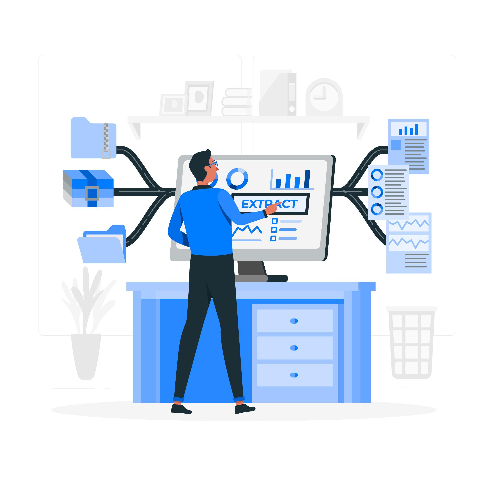
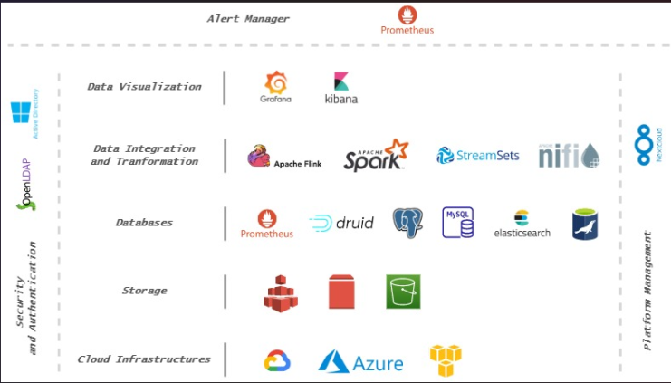

AI and Big Data Unleashed: Igniting Your Path to Success

Introduction:
In a transformative endeavor, Kudala, a global AI IoT solutions provider, partnered with Squadron Technology to tackle complex challenges within their expansive product stack. Facing issues of scalability, cost, and complexity, Kudala sought a solution that would seamlessly integrate with various cloud platforms, reduce operational expenses, enable proactive monitoring, and simplify maintenance. Squadron Technology's hybrid Kubernetes-based approach delivered on these fronts, paving the way for a more scalable, efficient, and cost-effective infrastructure. This partnership marks a significant milestone, propelling Kudala into a new era of AI and big data solutions
Problem Statement:
Kudala offers AI IoT solutions to global clients but faces challenges with their current product stack, built on 30+ OpenSource AI and Data Projects. The existing setup is resource-intensive, complex, non-scalable, and costly to maintain and monitor. Kudala seeks a solution that is Cloud Agnostic, providing seamless integration across various cloud platforms, scalable to meet increasing client demands, cost-effective to reduce operational expenses, equipped with proactive monitoring capabilities to detect issues in advance, and featuring one-click auto-deployment for streamlined updates and maintenance.
Solution:

SQUADRON TECHNOLOGY collaborated with their client, Kudala, to consult Kudala on Cloud Architecture and Implement an innovative Solution to deploy Kudala Product Stack on K8 in a cost-effective way. Squadron Architect proposed 2 possible Architectures on K8 that meet the requirements. After collaborative discussion between the Teams, Engineers came up with a hybrid approach consisting of the best Solution considering Areas like:
- Dynamic Scaling and Node Replication
- Central Authentication and Authorization System
- Real-time Monitoring
- Easy Installation
- Multi-Zone Replication
- Private Networking and Firewall
Squadron Engineers have started development of building a Private Cloud-Agonistic Kubernetes Platform on 3 node machines with LDAP based Authentication, NFS based data persistence, and NextCloud based User Interface. Within 2 Weeks, Team started onboarding all Kudala Stack on K8 on Platform with proper integration with LDAP and Storage.
As part of Onboarding, Team has configured Various Open Source as per Projects on K8 Cluster:
- Distributed Data Processing: Hadoop, Hive, Apache Spark, Collabora, Flink, Kafka SQL, Nifi
- AI Tool: TensorFlow, Keras, Compose, Cortex, H2O, Spark ML
- Management Dashboard: NextCloud
- Dashboard: Grafana, Superset, Kibana
- Authentication and Authorization: LDAPs
- Queue/Streaming: MQTT, Apache Kafka
- Database: MariaDB, MindsDB, Nextcloud, Node-RED, Prometheus, Redis, Timescale, ElasticSearch
- Automation: Terraform and Python
- K8 Management and Monitoring: Rancher
Conclusion:
With this comprehensive solution now in place, Kudala is equipped to better serve its global clients with seamless AI IoT solutions. The transformation from a resource-intensive, complex, and non-scalable product stack to a Cloud Agnostic, highly scalable, and cost-effective solution will undoubtedly enhance Kudala's capabilities, reduce operational expenses, and enable the company to stay proactive in detecting and resolving issues. The one-click auto-deployment feature ensures streamlined updates and maintenance, making it easier for Kudala to keep their product stack up-to-date.
In conclusion, the successful completion of this project marks a significant milestone for both Kudala and Squadron Technology. The collaboration between the teams has resulted in a cutting-edge solution that sets Kudala on a path of growth and success in the rapidly evolving landscape of AI IoT solutions.